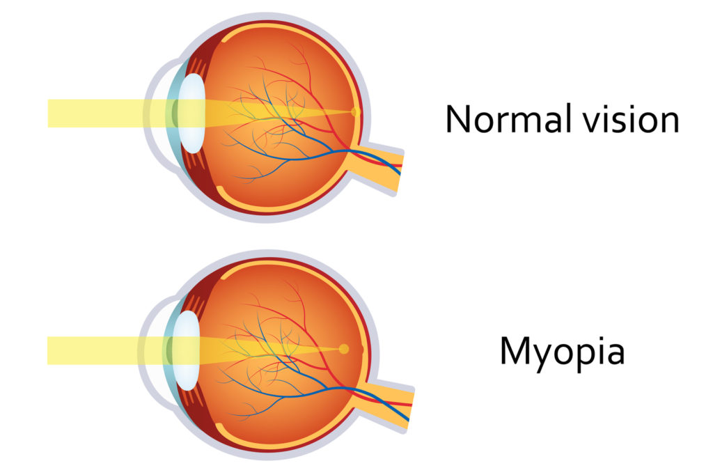
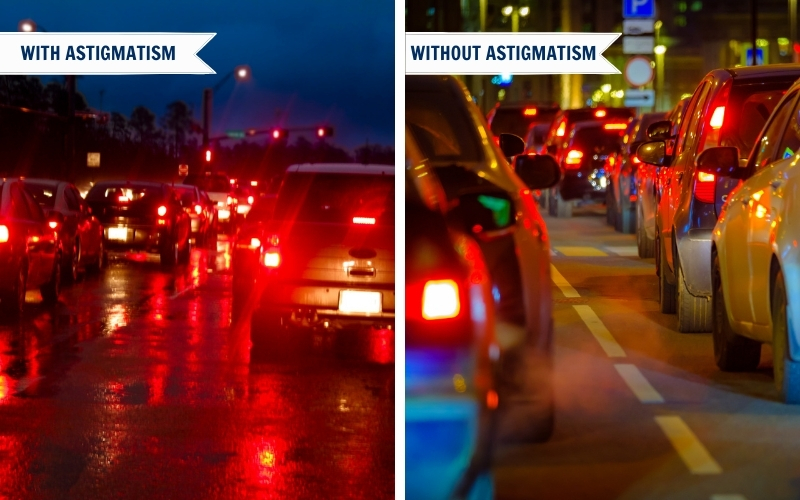
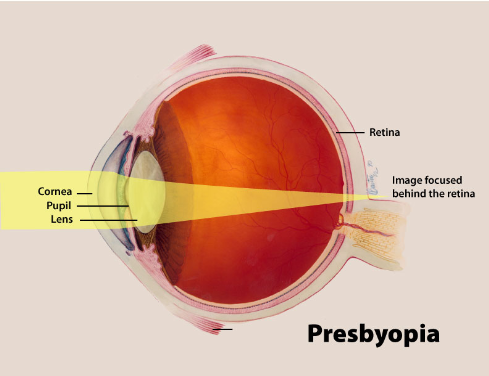

About our Eyes
We Care For Your Eyes
Myopia

What is myopia?
Nearsightedness (myopia) is a common vision condition in which you can see objects near to you clearly, but objects farther away are blurry. It occurs when the shape of your eye causes light rays to bend (refract) incorrectly, focusing images in front of your retina instead of on your retina.
Nearsightedness may develop gradually or rapidly, often worsening during childhood and adolescence. Nearsightedness tends to run in families.
A basic eye exam can confirm nearsightedness. You can compensate for the blur with eyeglasses, contact lenses or refractive surgery.
Hypermetropia
What is hypermetropia?
Farsightedness (hypermetropia or hyperopia) is a common vision condition in which you can see distant objects clearly, but objects nearby may be blurry.
The degree of your farsightedness influences your focusing ability. People with severe farsightedness may be able to clearly see only objects a great distance away, while those with mild farsightedness may be able to clearly see objects that are closer.
Farsightedness usually is present at birth and tends to run in families. You can easily correct this condition with eyeglasses or contact lenses. Another treatment option is surgery.

Astigmatism

What Is Astigmatism?
Astigmatism (uh-STIG-muh-tiz-um) is a common and generally treatable imperfection in the curvature of your eye that causes blurred distance and near vision.
Astigmatism occurs when either the front surface of your eye (cornea) or the lens, inside your eye, has mismatched curves. Instead of having one curve like a round ball, the surface is egg shaped. This causes blurred vision at all distances.
Astigmatism is often present at birth and may occur in combination with nearsightedness or farsightedness. Often it's not pronounced enough to require corrective action. When it is, your treatment options are corrective lenses or surgery.
Presbyopia
What is presbyopia?
Presbyopia is the gradual loss of your eyes' ability to focus on nearby objects. It's a natural, often annoying part of aging. Presbyopia usually becomes noticeable in your early to mid-40s and continues to worsen until around age 65.
You may become aware of presbyopia when you start holding books and newspapers at arm's length to be able to read them. A basic eye exam can confirm presbyopia. You can correct the condition with eyeglasses or contact lenses. You might also consider surgery
